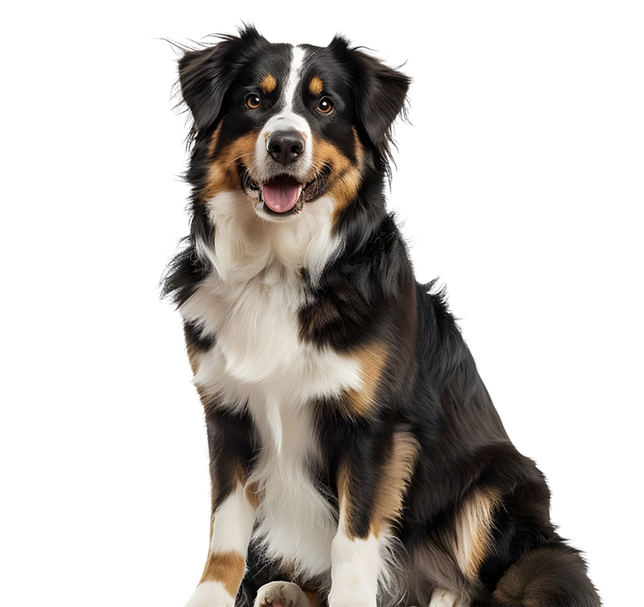
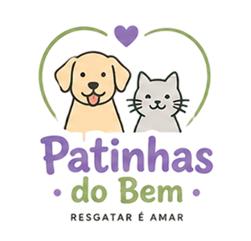
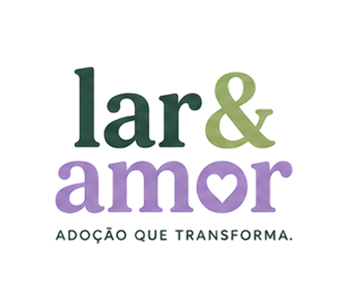
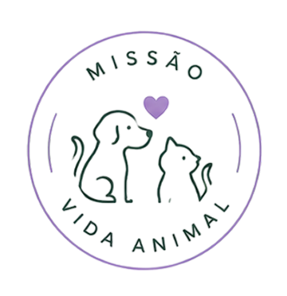
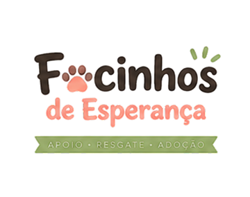
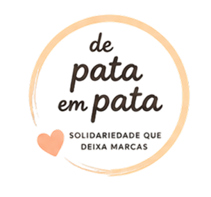
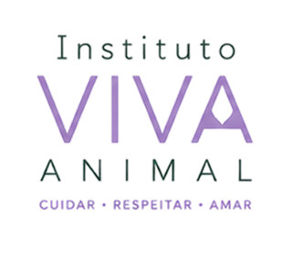
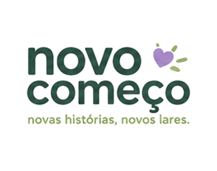

Programa de castração e adoção responsável
Todo bicho merece um lar. Toda cidade, cuidado.
O Programa Arca, da Prefeitura da Serra, conecta quem quer adotar às organizações de proteção animal e divulga as campanhas de castração e vacinação.
0animais esperando um lar
0campanhas na cidade
0organizações parceiras

Adoção
Quem está esperando por você
Estes são alguns dos animais cadastrados pelas organizações. Entre na sua conta para conhecer todos e demonstrar interesse.
Carregando animais...
Campanhas
Na agenda da cidade
Castração, vacinação e feiras de adoção organizadas pelas parceiras do programa.
Filtrar por objetivo
Para organizações
Sua ONG também cabe na Arca
Cadastre sua organização
Crie sua conta de representante e registre os dados da instituição.
Mostre seus animais
Adicione fotos, saúde e custo médio para quem quer adotar com responsabilidade.
Receba interessados e divulgue ações
Acompanhe quem quer adotar e publique campanhas de castração, vacinação e feiras.

Quem já confia na Arca






